Conversations¶
ELITEA Chat is an ultimate feature, allowing you to combine all ELITEA features in one place and achieve the best output and results.
In the ELITEA framework, a conversation is a dialogue among various participants such as selected language models, agents, pipelines and human users. The chat uses natural language to interact with a human and receive/give feedback. Within one conversation, you can refer to previous questions and answers. However, different conversations don’t share context.
All your conversations are stored on the ELITEA server, and you can access them from any device you use. All your conversations are accessible from the Chat menu.
Conversations support the following functionality:
- Public and Private Conversations: Share your conversation with other users from your project, involve them in the same conversation, or keep it private and visible only to you.
- Participants: Add various participants to the conversation, including other users in public conversations, agents, pipelines and language models, making them part of the conversation.
- Canvas Mode: Visualize and interact with conversation flows using a graphical canvas interface.
- Interactions: Interact with added participants, copy generated responses, and more.
- Managing Conversations: Save conversations, pin the most important ones at the top of the screen, make private conversations public, delete conversations, clean the content of the conversation, and export the context of the conversation.
- Folders: Organize your conversations into folders for better management. You can create folders, move conversations to folders, edit folder names, or delete folders.
- Playback: During playback, you can move backward and forward through the playback process or stop the conversation by simulating the current conversation without any engagement with models.
For more details see How to Use Chat Functionality.
Creating a Conversation¶
- Go to the Chat section in the left sidebar.
- Click the + Create button at the top.
- Enter a name for your conversation (defaults to "New Conversation") and confirm.
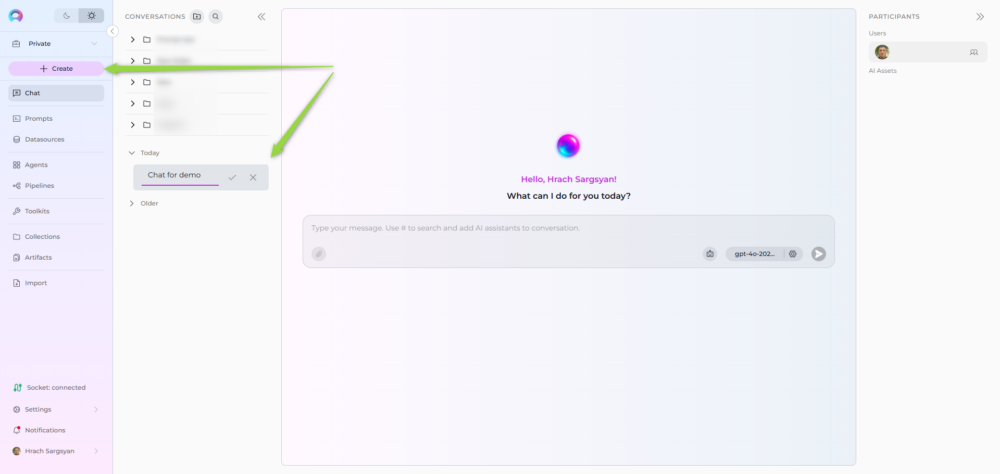
Your newly created conversation will subsequently appear in the Conversation's list.
Conversation Sorting and Organization¶
Conversations in the CONVERSATIONS sidebar are automatically organized by time periods for better navigation:
- Today: Conversations created or active today appear at the top.
- Yesterday: Conversations from the previous day are grouped together.
- This Week: Conversations from the current week are grouped together.
- Older: All conversations older than yesterday are grouped under this section.
This automatic time-based sorting helps you quickly locate recent conversations and maintain an organized conversation history. Pinned conversations will always appear at the very top, regardless of their creation date.
Creating a Folder¶
- Click the + Folder button located at the top of the CONVERSATIONS sidebar.
- Provide a Name for the folder.
- Click Save to create the folder. The new folder will appear in the CONVERSATIONS sidebar.
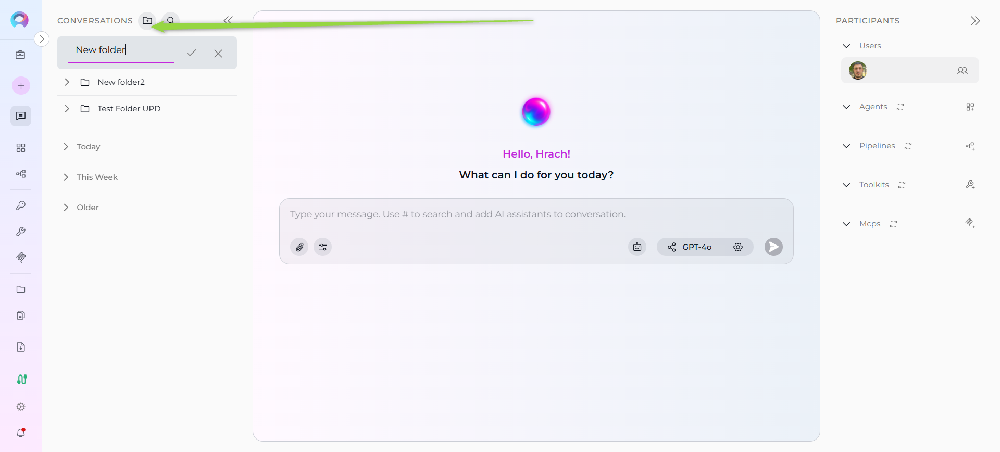
How to Move Conversations to a Folder¶
- Right-click on the conversation you want to move.
- Select Move to from the contextual menu.
- Choose the target folder from the list. If no folder exists, you can create one by clicking + New Folder.
Quick Organization
Alternatively, you can drag and drop conversations directly into folders in the sidebar for quick organization.
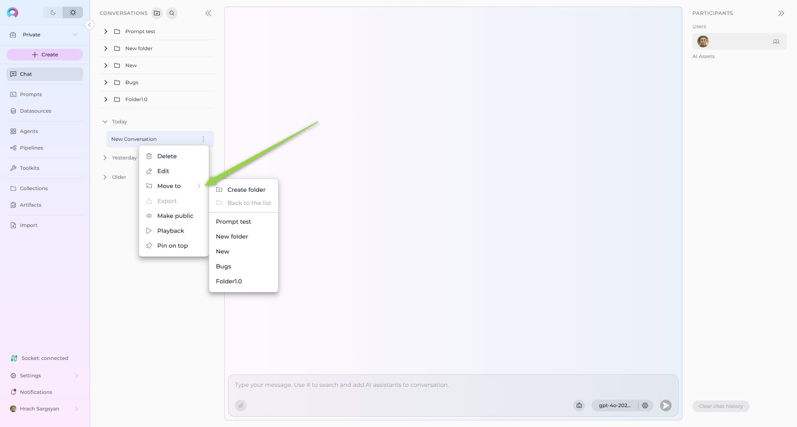
How to Move Conversations Back to the Main List¶
To move conversations from folders back to the main CONVERSATIONS list:
- Navigate to the folder containing the conversation you want to move.
- Right-click on the conversation inside the folder.
- Select Back to the list from the contextual menu.
- The conversation will be moved from the folder back to the main CONVERSATIONS list.
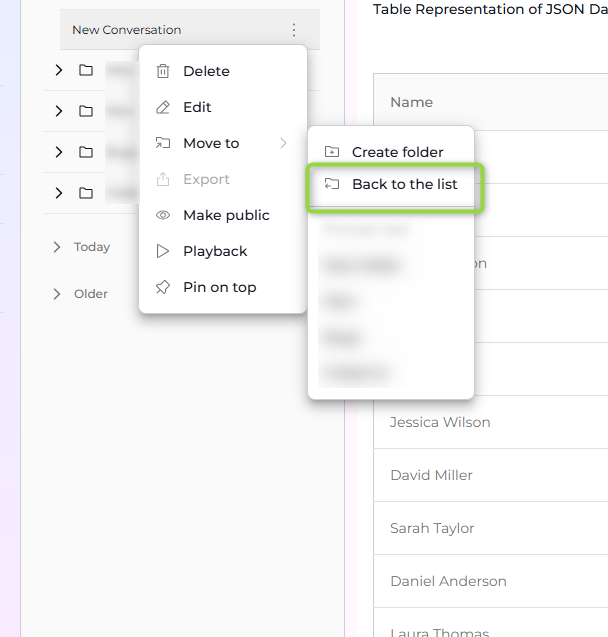
Note
This action is only available if you are a member of the conversation or have the necessary permissions.
Private and Public Conversations/Folders¶
Private Conversations and Folders¶
- When creating a folder in a private project, you can add all types of participants, except users.
- These folders and their contents are only accessible to you.
Team Project Conversations and Folders¶
If you are part of a team project:
- You can view all folders within the project.
- You can only see conversations inside folders if you are a member of those conversations.
- If you are a member of a conversation, you can move the conversation into a folder or remove it from the folder using the Back to the list option.
- You cannot delete a folder created by others, but you can move conversations inside the folder if you are a member of those conversations.
Public Conversations and Folders¶
- Public folders are accessible to all members of the project.
- Conversations within public folders can be viewed and interacted with by all project members.
- Any member of the project can move conversations into public folders or remove them, depending on their permissions.
- Public folders cannot be converted to private folders.
Participants¶
Participants are additional "tools" that can be added to the conversation to enhance it. The following types of participants are available:
- Models: LLM models which can be added to the conversation to interact with Gen AI and get responses from the selected model.
- Agents/Pipelines: Agents or pipelines—either already created within the project or available as public resources—that can be added to the conversation to execute them and receive responses.
Note
Another category of participant is the user, which can't be added, but in the case of public conversations, users within the project can follow the conversation, interact with it, and thus become participants.
How to Add Users to a Conversation¶
- In the PARTICIPANTS panel, click the users icon next to your avatar.
- Select Add users from the dropdown menu.
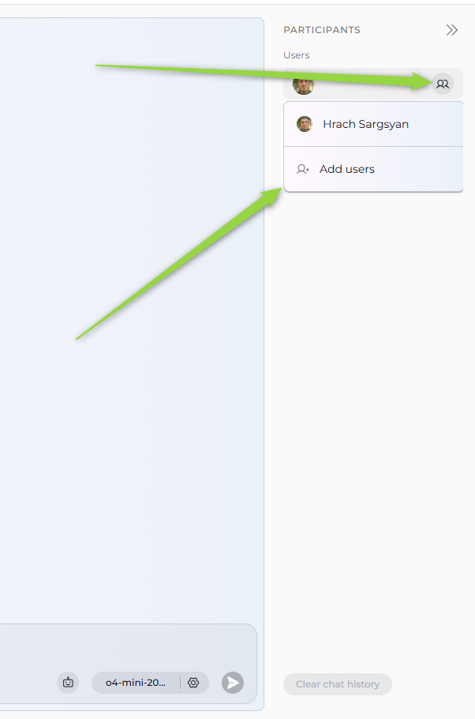
- The Add users modal will appear with a search bar.
- Use the search bar to find teammates by name.
- Select one or more users from the list by clicking on them.
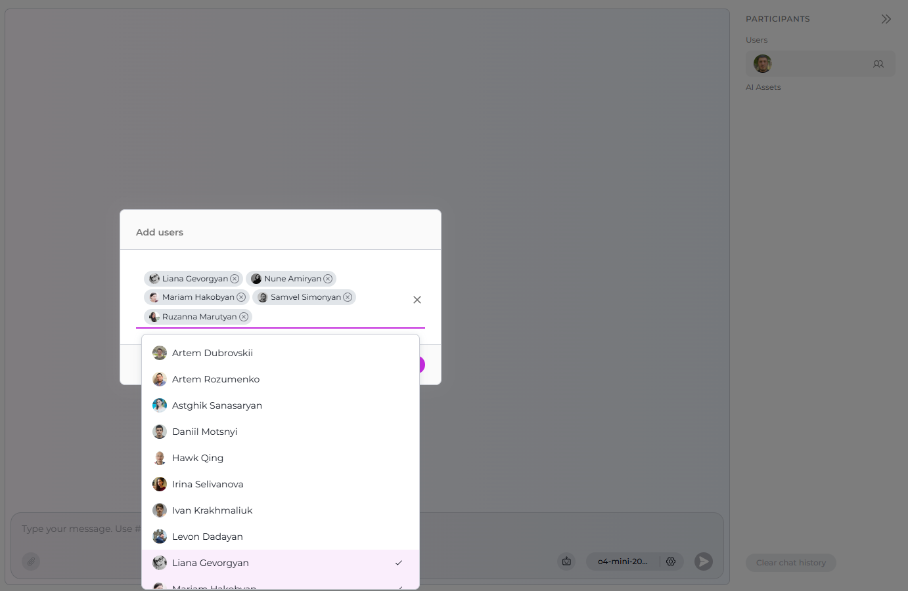
-
Click Add to confirm. The selected users will be added as participants to your chat.
-
Added users will appear in the PARTICIPANTS section. Hover over user avatars in the participant list or type @username in the chat input to mention and notify teammates in the conversation. To mention everyone in the conversation, select the All Users option.
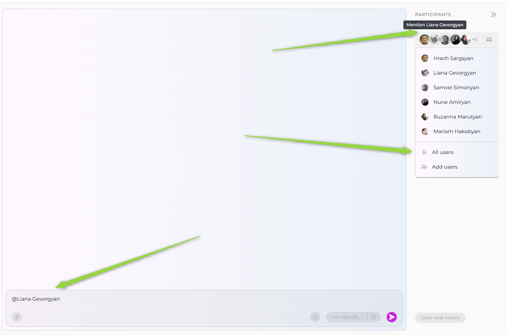
Note
- Users can be removed by hovering over their name in the participants list and clicking the remove icon.
- Users will receive notifications when they are added as participants in a conversation.
Adding Assistants:¶
- At the bottom of the chat, click the Switch assistant icon.
- In the opened "Frequently Used" list, click on the desired assistant (e.g., Agent) to select it.
- Alternatively, type # followed by the assistant name (e.g.,
#ADO) in the input box to quickly select an assistant. - The Agent will be visible under "AI Assets" in the PARTICIPANTS area.
-
Select a version of the agent at the bottom of the chat.
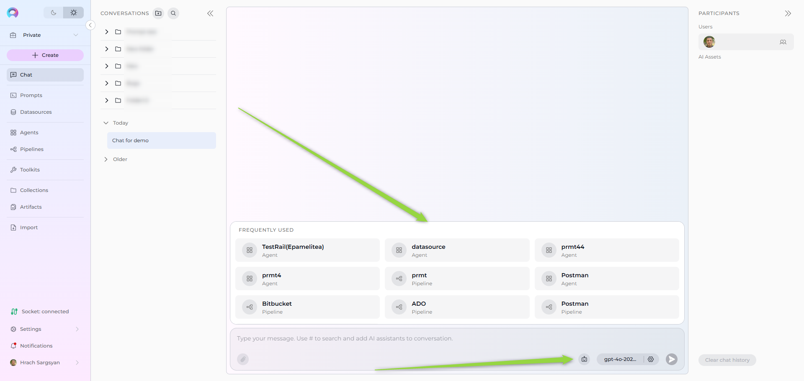
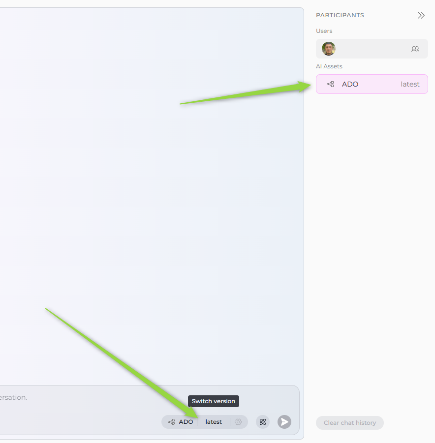
-
All assistants appear in the right sidebar (PARTICIPANTS area) for easy switching. Click on a participant in the list to activate and interact with it
- To remove an assistant, hover over their card in the list and click the remove icon.
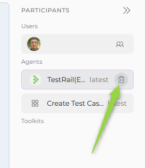
Display Configured Conversation Starter¶
When you add a participant to a conversation, the configured conversation starter for that participant will automatically display in the chat. This feature improves usability and ensures a smooth start to conversations by providing immediate context and guidance on how to interact with each participant.
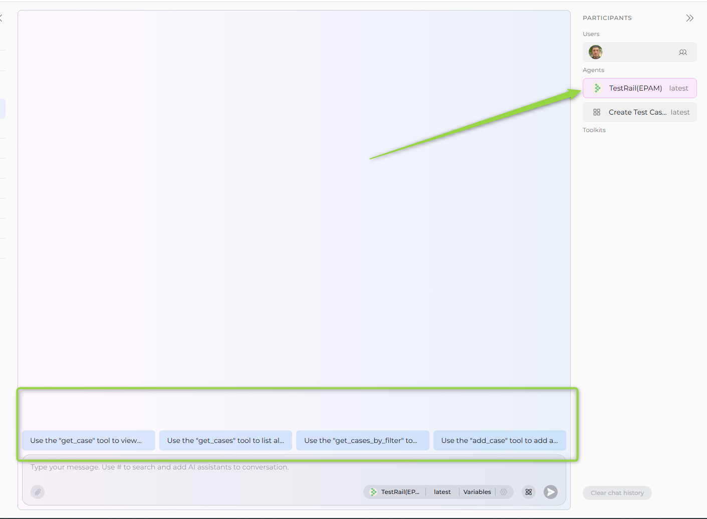
Adding LLM Models:¶
- Click the Switch to model button at the bottom of the chat.
- Select a desired LLM model (e.g., gpt-4o) from the available options.
- To configure the model settings, click the Settings (gear) icon next to the assistant name.
-
Configure the Model settings in the opened modal window. You can configure the following settings for the model: Temperature, Top P (0-1), Top K, and MaxCompletion Tokens. To apply changes, click the < Apply button.
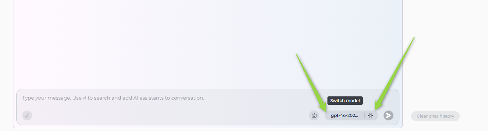
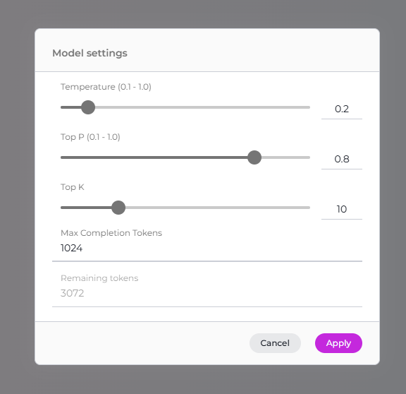
Actions for Conversation¶
The following actions are available for created conversations from CONVERSATIONS sidebar:
- Delete: To delete a single conversation, on the left panel, in the conversation contextual menu, select Delete and confirm your action.
- Edit: To rename a conversation, on the left panel, in the conversation contextual menu, select Edit and confirm your action.
- Move To: To move a conversation to a folder, on the left panel, in the conversation contextual menu, select Move To and choose the desired folder. If no folder exists, you can create one by clicking + New Folder.
- Export: To export a single conversation, on the left panel, in the conversation contextual menu, point to Export.
**Note**: Not applicable now. - Make Public: To make a private conversation public, on the left panel, in the conversation contextual menu, click the Make Public icon. Note: You will not be able to convert it back to Private.
- Playback: The Playback mode can be used to simulate the current conversation without any engagement with models. This mode accurately reproduces the conversation like a recording and includes forward/backward navigation controls. It's well designed for demo purposes and allows you to step through conversations turn by turn. During playback, you can use keyboard arrows (left/right) or the on-screen controls to navigate through the conversation history.
-
Pin: To pin a single conversation, on the left panel, in the conversation contextual menu, select Pin. Your conversation will be pinned at the top of your conversation's list.
Tip
You can unpin the conversation by clicking the Unpin action.
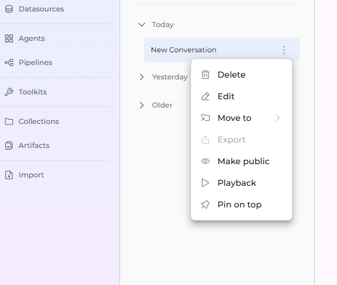
Actions for Folders¶
The following actions are available for managing folders in the CONVERSATIONS sidebar:
- Edit Folder: Select Edit in the folder contextual menu, update the folder name and click the ✔ button to save your changes.
- Delete Folder: Select Delete in the folder contextual menu and confirm the deletion. Note: Deleting a folder will not delete the conversations inside it; they will be moved back to the main CONVERSATIONS list.
-
Export: To export a single folder, on the left panel, in the folder contextual menu, point to Export.
Note
To be available in future updates.
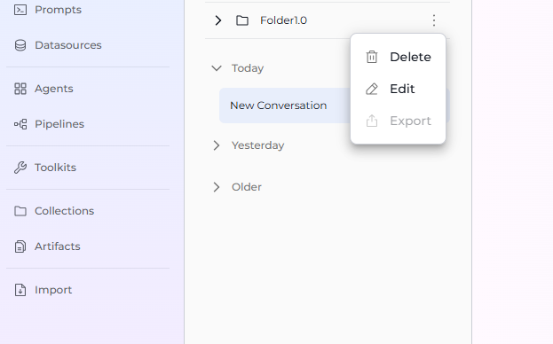
Like/Dislike, Comment, and Regenerate Outputs¶
To engage with the generated outputs in conversations, utilize the Like/Dislike actions, add comments, or use the Regenerate option for refinement or feedback.
How to Like/Dislike and Comment an Output¶
- After generating an output in the conversation, Thumbs Up and Thumbs Down buttons displayed alongside the output.
- Click the Thumbs Up icon to like the output or the Thumbs Down icon to dislike it.
- After clicking the Thumbs Down icon, a Leave comment field will appear. Click on it, type your feedback in the input box, and press Send to save it.
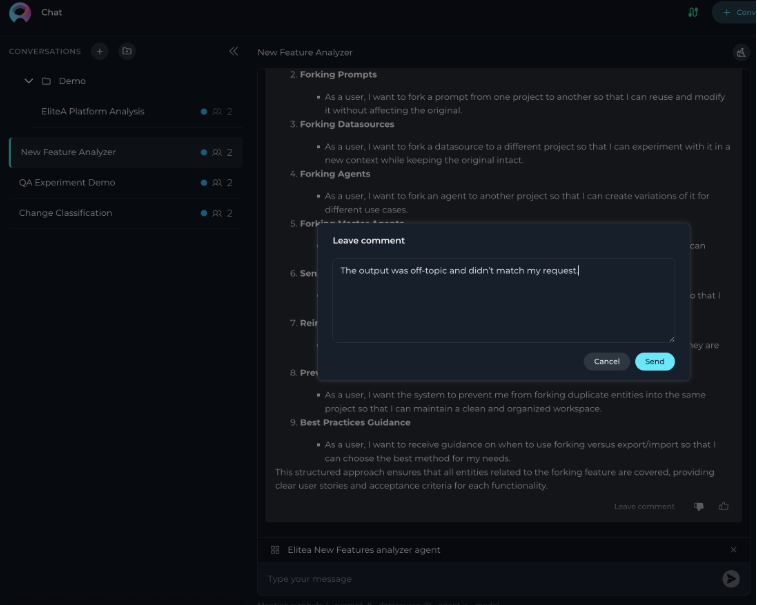
How to Regenerate the Last Output¶
The Regenerate Last Output option becomes available only after initiating a conversation. This feature allows you to refine or correct the last generated output.
- After generating an output in the conversation, click the Regenerate icon 🔄 .
- The system will regenerate the output based on the same input, providing a refined or corrected response.
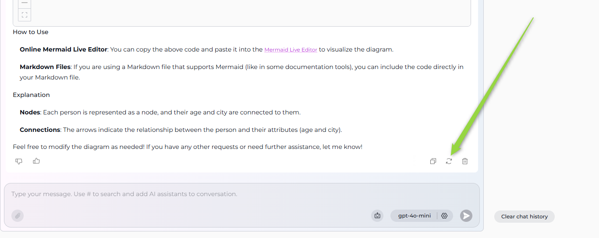
Editing Generated Content with Canvas¶
The Canvas feature allows you to directly edit code, tables, and Mermaid diagrams generated during a conversation. This powerful tool enhances your ability to refine and customize outputs without leaving the chat interface.
Canvas becomes automatically available when a generated response is:
- Code
- A Table
- A Mermaid Diagram
When available, a Pencil icon ✏️ will appear alongside the generated output. Clicking this icon opens the Canvas editor for that specific content type.
The Canvas feature is supported when interacting with the following participants: * Agents * Pipelines * LLM Models (direct interaction)
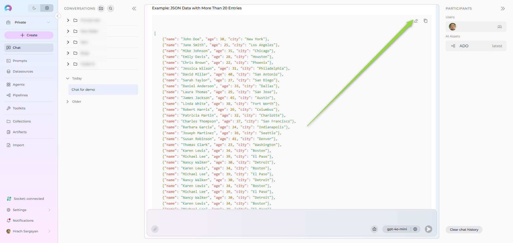
Real-time Collaboration in Canvas¶
Canvas supports real-time collaborative editing where multiple users can work on the same content simultaneously:
- Multi-user Editing: Multiple team members can edit the same canvas content at the same time
- User Indicators: See who else is currently editing the content with user avatars and names
- Live Updates: Changes made by other users appear in real-time
- Edit Conflicts: The system manages edit conflicts automatically to ensure data integrity
Editing Code with Canvas¶
- Click the Pencil icon ✏️ next to a code block to open the Canvas Code Editor.
- The editor will display the code, and the currently selected code language will be shown.
- You can directly edit the code within this view.
- Use the following actions:
- Copy to clipboard: Click the copy icon to copy the entire code block.
- Undo/Redo: Click the respective icons to revert or reapply changes.
- Save: Click the X icon to save your changes and close the Canvas editor. (Placeholder for actual save icon/mechanism if 'X' is incorrect)
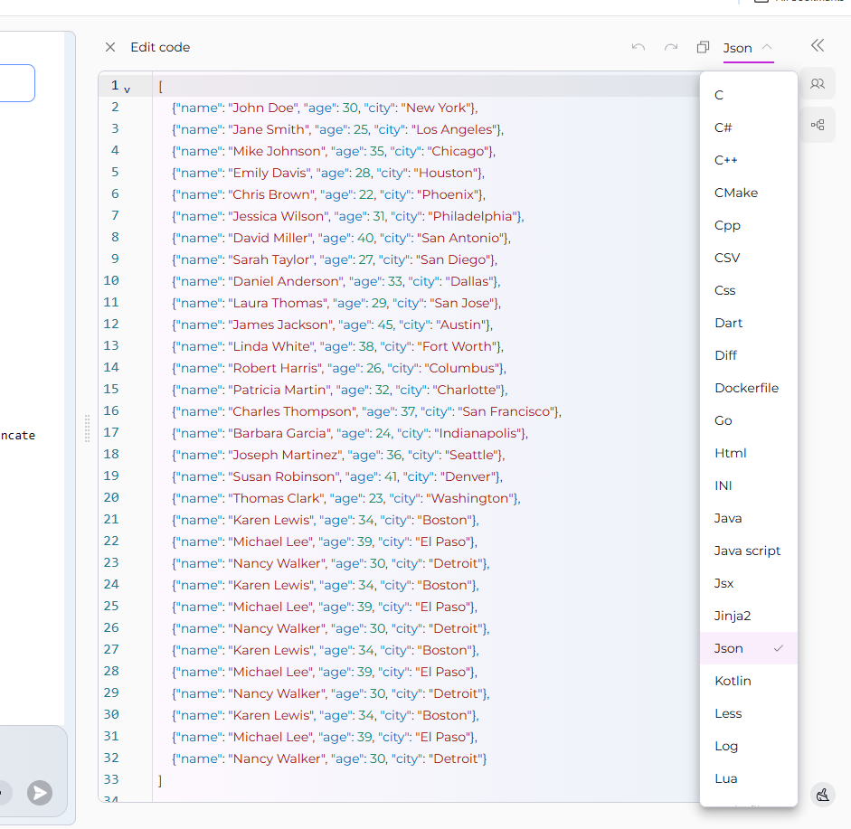
Editing Tables with Canvas¶
- Click the Pencil icon ✏️ next to a table to open the Canvas Table Editor. Tables are presented in Markdown format within the editor but rendered as interactive tables.
- You can directly edit the table content and structure.
-
Use the following actions:
- Manual Editing: Modify text directly in table cells and column headings.
- Delete Rows: Select the checkbox(es) next to the rows you wish to remove, then click the delete row icon.
- Add Columns/Rows: Click the Add column or Add row icons to expand the table.
- Copy to clipboard: Click the copy icon to copy the table data.
- Import CSV: Click the Import table icon to upload data from a CSV file.
- Download as XLSX: Click the Download as xlsx button to save the table data as an Excel file.
- Undo/Redo: Click the respective icons to revert or reapply changes.
- Save: Click the X icon to save your changes and close the Canvas editor. (Placeholder for actual save icon/mechanism if 'X' is incorrect)
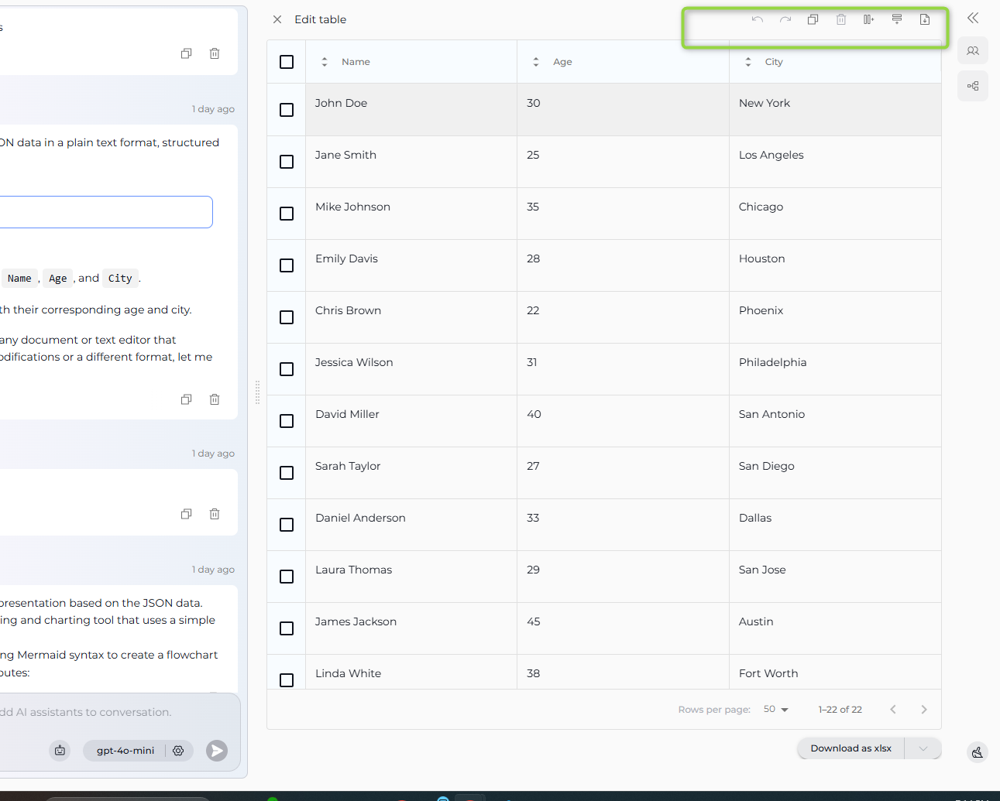
Table Manipulations:
- Sorting: Click the sorting icons (e.g., ▲▼) next to each column heading to sort the data in ascending or descending order for that column.
- Filtering: Click the ... (ellipsis) icon next to a column heading and select the Filter option to apply filters to the data in that column.
- Hiding Columns: Click the ... (ellipsis) icon next to a column heading and select the Hide column option to remove the column from view.
- Column Resizing: Drag the column borders to resize columns to your preferred width.
- Cell Editing: Double-click any cell to edit its content directly within the table interface.
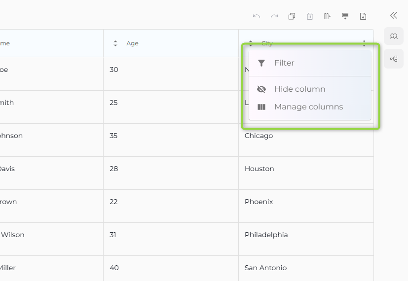
Editing Mermaid Diagrams with Canvas¶
- Click the Pencil icon ✏️ next to a Mermaid diagram to open the Canvas Mermaid Diagram Editor.
- You can directly edit the Mermaid diagram code in the editor view.
- A live Preview of the diagram will be displayed below the editor, updating as you make changes to the code.
-
Use the following actions:
- Copy to clipboard: Click the copy icon to copy the Mermaid diagram code.
- Download: Download the rendered diagram in JPG, PNG, or SVG formats using the respective download button.
- Undo/Redo: Click the respective icons to revert or reapply changes.
- Save: Click the X icon to save your changes and close the Canvas editor. (Placeholder for actual save icon/mechanism if 'X' is incorrect)
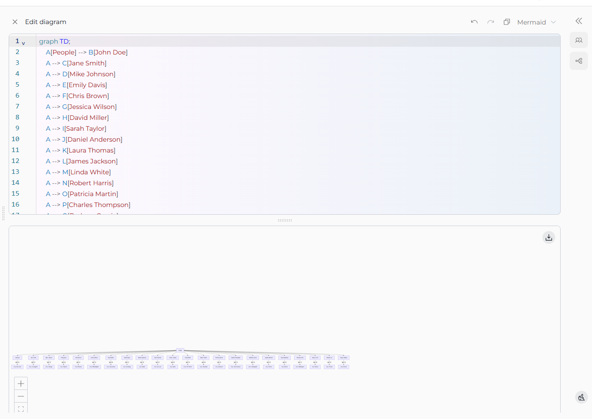
Clear Chat History¶
The Clear Chat History feature allows you to remove all messages and content from the current conversation while keeping the conversation itself and its participants intact. This is useful when you want to start fresh with the same setup or clean up a conversation that has become too long.
- In the PARTICIPANTS panel on the right side of the chat interface, locate the Clear chat history button at the bottom.
- Click the Clear chat history button.
- A confirmation dialog will appear asking you to confirm the action.
-
Click Confirm to proceed with clearing the chat history.
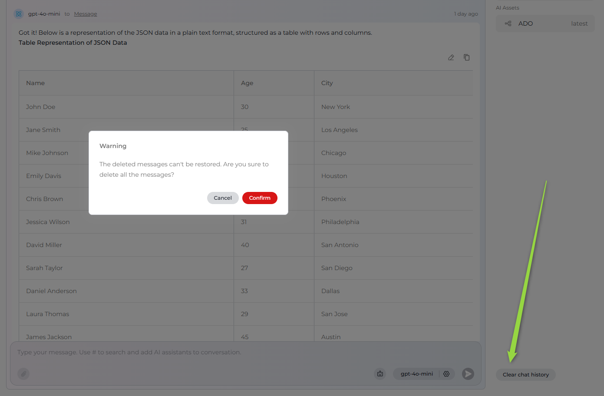
Note
- This action will permanently remove all messages, responses, and generated content from the conversation. The conversation itself, its name, participants, and settings will remain unchanged.
- This action cannot be undone. Make sure to export or save any important content before clearing the chat history.